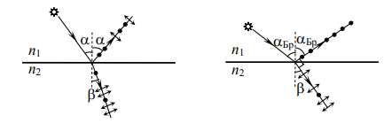
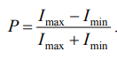
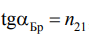
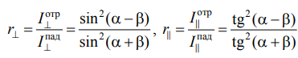
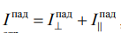
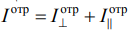
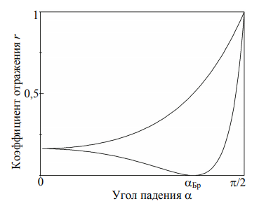

Поляризация при отражении и преломлении света на границе двух диэлектриков
Цель работы: экспериментально определить угол Брюстера
для пластинки из диэлектрического материала и с его помощью
вычислить показатель преломления материала.
Одним из способов получения плоскополяризованного света
из естественного является отражение света на границе двух диэлектриков. Свет, проходя через границу двух сред с разными
показателями преломления n1 и n2, испытывает отражение и преломление.

Если естественного света α
отличен от нуля, отраженный и преломленный пучки оказываются частично . В отраженном пучке преобладают
колебания светового вектора E
G
, перпендикулярные плоскости
падения (на рисунке выше эти колебания обозначены точками), а в
– колебания, параллельные плоскости падения (на рисунке выше они изображены двусторонними стрелками).
Степень поляризации P пучков зависит от угла
падения α.

При некотором значении угла падения α = αБр отраженный
свет становится плоскополяризованным (он содержит только колебания, перпендикулярные плоскости падения).
При этом преломленный свет остается частично поляризованным, но степень его поляризации достигает максимально
возможного значения. Угол αБр называют . Он
удовлетворяет где n21 = n2/n1 – относительный показатель преломления сред.

n1sinα = n2sinβ
(β – угол преломления света), можно убедиться, что при падении
света под отраженный и преломленный лучи взаимно перпендикулярны.
Объяснить поляризацию света, возникающую при его отражении
и преломлении на границе двух диэлектриков, можно с помощью
формул Френеля. Эти формулы вытекают из условий, налагаемых на
напряженности электрического E
G и магнитного H
G полей световой
волны на границе диэлектриков, и следуют из уравнений Максвелла
для электромагнитного поля. Из формул Френеля, в частности, вытекает, что коэффициенты отражения плоскополяризованного света,
плоскость поляризации которого перпендикулярна плоскости падения (r⊥) и параллельна ей (r& ), определяются по формулам.

Падающий на границу раздела естественный свет можно
представить как наложение (сумму) двух некогерентных плоско-поляризованных волн с взаимно перпендикулярными плоскостями
поляризации, ориентированных перпендикулярно и параллельно
плоскости падения.
Тогда интенсивность падающего света .

И интенсивность отраженного света .

Из следует, что при угле падения α = 0° r r ⊥ = & . Отсюда следует, что при нормальном падении естественного света на границу раздела отраженный световой поток остается неполяризованным. При 0° < α < 90°
r r ⊥ > & и в отраженном свете будут преобладать колебания светового
вектора, перпендикулярные плоскости падения, т. е. свет становится
частично поляризованным. При α = αБр r = 0 & и r 0 ⊥ ≠ .

Это означает,
что отраженный свет будет полностью поляризован с плоскостью
поляризации, перпендикулярной плоскости падения. Заметим, что
r = 0 & при α = αБр, если αБр + β = 90° в формуле. Нетрудно показать, используя закон преломления света, что это справедливо, когда αБр удовлетворяет закону Брюстера.
Отражение под углом Брюстера представляет собой самый
простой способ получения поляризованного света. Недостатком
этого способа является .